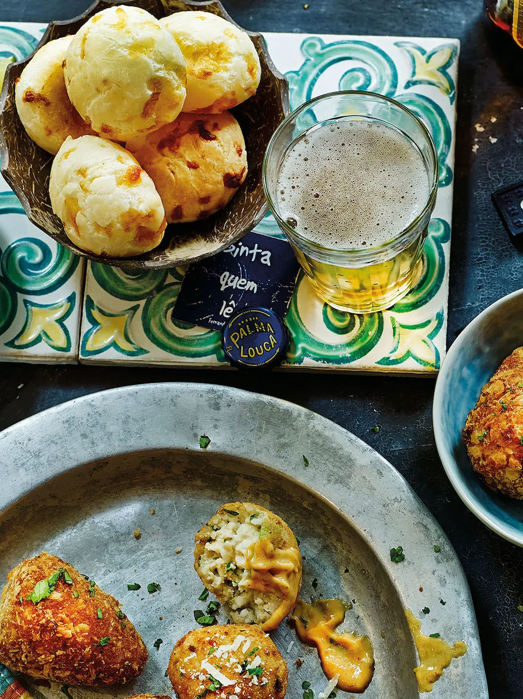

Brazilian Pão de Queijo

Description
“Crispy puffs of dough with a mild, cheesy flavour, pão de queijo are eaten for breakfast or as a snack all over Brasil. The secret to this addictive treat is the use of cassava flour (polvilho azedo), which gives the balls an irresistibly moist, chewy texture. The best ones we’ve ever tasted were from a tiny hole-in-the-wall bakery in São Paulo, and we like to think this recipe comes pretty close. ”
- Cooks in 1 hour plus chilling
- Makes 25
- Difficulty: Not too tricky
Ingredients
- 125ml whole milk
- 50ml vegetable oil
- 250g cassava flour , (or substitute tapioca flour)
- 2 large free-range eggs
- 200g Parmesan or mature Cheddar cheese
Method
- Put 125ml water, the milk, vegetable oil and 1 teaspoon of sea salt in a large pan and bring to the boil.
- As soon as it rises up the sides of the pan, remove it from the heat. Quickly tip in the flour and stir vigorously to combine. Keep stirring until the mixture comes together as a wet dough and comes away from the side of the pan.Transfer to the bowl of a stand mixer and leave to cool slightly.
- Crack the eggs into a bowl and beat together, then add to the dough and start mixing at a low speed. After 1 to 2 minutes, increase the speed to high and beat vigorously until all the egg has been incorporated and the dough is smooth.
- Grate the Parmesan, and add to the mix. Keep beating until the cheese is evenly mixed in.
- Line a baking sheet with silicone liner or baking parchment.
- With damp or lightly oiled hands, roll tablespoons of the dough into small balls, about 25 to 30g each. You may need to wash your hands occasionally, as the dough is quite sticky. (If you have one, use a small ice-cream scoop to make this easier. Dip the scoop briefly in water, then flick away any excess water before scooping each ball.)
- Arrange the balls 2.5cm apart on the prepared baking sheet. You can prepare them a few hours ahead and put the tray in the fridge until you’re ready to bake.
- Preheat the oven to 200°C/400°F/gas 6.
- Bake for 20 to 25 minutes, until puffed up and evenly golden brown. They should have a crisp exterior and a doughy, chewy centre. Serve immediately.